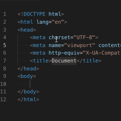
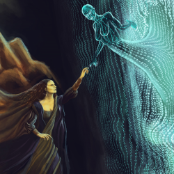

Propósito del sitio
 Este sitio ha sido diseñado con el objetivo de apoyar a los estudiante de la Universidad del Estado en los temas correspondientes a Fundamentos HTML e Interacción Humano - Ordenador, aqui encontrara contenido correspondiente al tema en cuestión y material de apoyo para aumentar sus conocimientos y profundizar cuanto sea necesario en el tema.
Este sitio ha sido diseñado con el objetivo de apoyar a los estudiante de la Universidad del Estado en los temas correspondientes a Fundamentos HTML e Interacción Humano - Ordenador, aqui encontrara contenido correspondiente al tema en cuestión y material de apoyo para aumentar sus conocimientos y profundizar cuanto sea necesario en el tema.
Fundamentos HTML
 HTML es la sigla de HyperText Markup Language este es un lenguaje que nos permite programar contenido Web, utiliza una sintaxis basada en marcadores que rodean el texto segun las necesidades del usuario, ya sea indicar negrilla, cursiva o subrayado, estos archivos son interpretados por naveagores web o agentes de usuario. Estos dos son a su vez software que nos permite acceder a los recursos HTML, traduciendo este lenguaje de manera que resulte en una interpretación mas sencilla ante nuestros ojos, ejemplos de estos aplicativos son: Google Chrome, Internet Explorer o Mozilla Firefox.
Interacción Humano-Ordenador
 Es una disciplina dentro de la informatica, con mas de dos decadas de desarrollo que ha tomado forma desde el origen de los primeros equipos de computo que permitian realizar actividades contables, jugar o interpretar textos, hasta el punto de ofrecer una amplia gama de herramientas al ser humano en temas como: entretemiento/ocio, salud, educación, finanzas, entre otros. Se ha facilitado el acceso a estos recursos desde que se ha buscado minimizar los componentes de los equipos, una mayor capacidad de procesamiento, hacer uso de la inteligencia artificial para predecir, facilitar y programar nuestras tareas permitiendo que el ser humano enfoque su tiempo en otros avances. Al contar con equipos mas compactos al punto de contar con "computadores" (telefonos inteligentes) en nuestros bolsillos se ha llegado a un punto en el que la tecnologia se ve con naturalidad antes nuestros ojos.